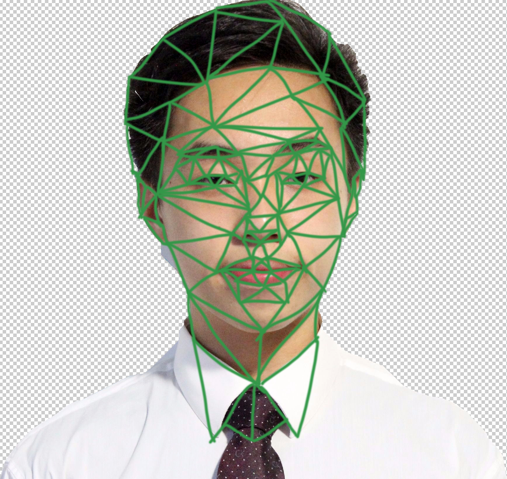
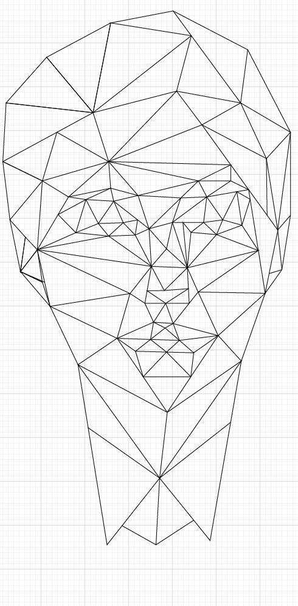
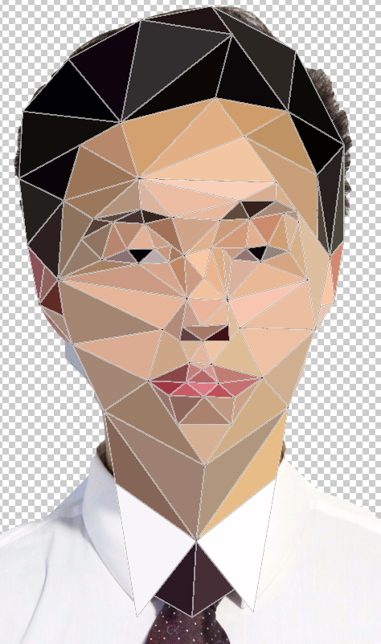
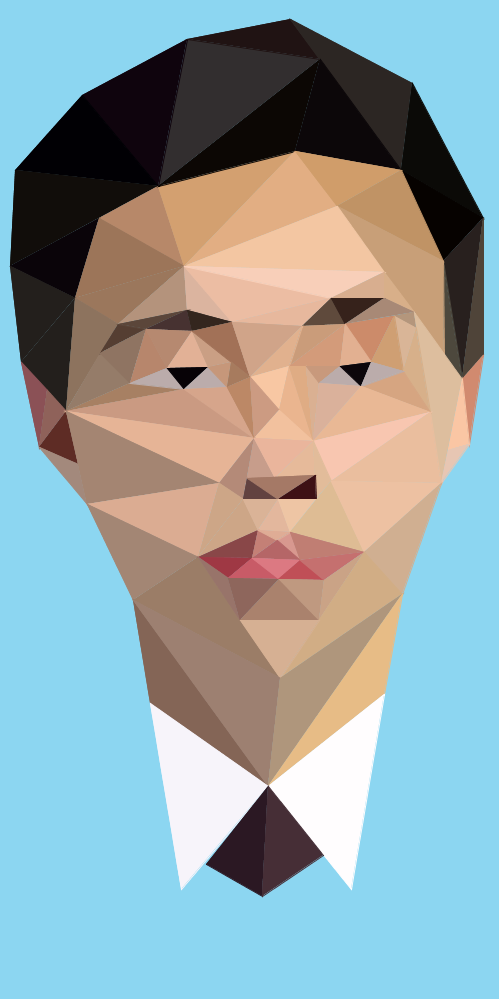

Follow me on my journey in understanding the concept of Creative Coding
My main inspiration for this was low-poly models and how similar it was to cubism

So I began my design with a portrait photo of me. Using Photoshop, I drew in triangle to followed the shape of my face as well as the features such as nose and mouth.
Afterwards, the rough mockup was loaded into Adobe Illustrator where the pen tool was used to create straight lines and paths in the shape of traigles.
The final mesh was overlayed ontop of the original photo and scaled so the lines matched my face contours as best as possible. Each triangle was colored by taking a sample of the color on the original photograph.
Finally, each coordinate was slowly taken from Illustrator and plotted in Processing. Then the colors where taken from Photoshop and used to determine the fill color as well as stroke color.
This project was much too time consuming. I am somewhat satisfied with the results but not completely convinced it as a worthy trade to the amount of time I invested. However, I did not have any other idea in mind for this project so I had to stick with it. Perhaps in the future, I may revisit this low-poly portrait design and include many more smaller triangles to add additional details.